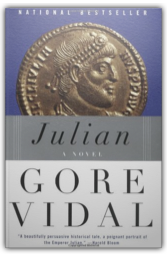
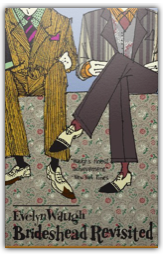
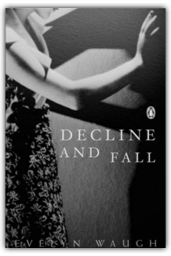
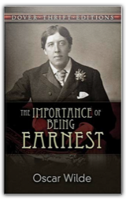
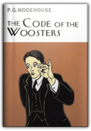
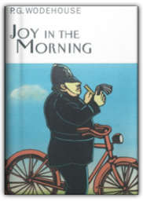

|

Julian: A Novel
Gore Vidal

The remarkable bestseller about the fourth-century Roman emperor who famously tried to halt the spread of Christianity, Julian is widely regarded as one of Gore Vidal’s finest historical novels.
Martin Walker's critical biography of Bill Clinton focuses on the president as a classic figure of America's post-World War II meritocracy, a poor boy from the segregated old South who won scholarships to elite universities and became a lawyer fascinated by the process and the power of government. Walker also unearths a private life that has resonated to the rhythmic clichés of a country-and-western song: Clinton's father died in a car wreck before he was born; his mother buried three husbands and married two more; his stepdaddy beat his mother and fired gunshots into the bedroom walls; one brother went to jail; and his own marriage tottered under the pain he admitted inflicting upon it. This president's background is as grittily American as the woeful tales that wail from jukeboxes in bars across the land. He is Bubba with brains, a redneck with a Rhodes scholarship—America at her most raw, and most cultivated. And his first term has been unpredictable, volatile, and fascinating. Martin Walker shows us the why, the how, and the future of the Clinton administration.
Those who practice the Muslim faith have resisted examinations of their religion. They are extremely guarded about their religion, and what they consider blasphemous acts by sceptical Muslims and non-Muslims alike has only served to pique the world's curiosity. This critical examination reveals an unflattering picture of the faith and its practitioners. Nevertheless, it is the truth, something that has either been deliberately concealed by modern scholars or buried in obscure journals accessible only to a select few.

Brideshead Revisited
Evelyn Waugh
Waugh tells the story of the Marchmain family. Aristocratic, beautiful and charming, the Marchmains are indeed a symbol of England and her decline in this novel of the upper class of the 1920s and the abdication of responsibility in the 1930s.
Lord Copper, newspaper magnate and proprietor of the "Daily Beast", has always prided himself on his intuitive flair for spotting ace reporters. That is not to say he has not made the odd blunder, however, and may in a moment of weakness make another. Acting on a dinner-party tip from Mrs Algernon Smith, he feels convinced that he has hit on just the chap to cover a promising little war in the African Republic of Ishmaelia. One of Waugh's most exuberant comedies, "Scoop" is a brilliantly irreverent satire of "Fleet Street" and its hectic pursuit of hot news.

Decline and Fall
Evelyn Waugh
1928. English writer, regarded by many as the leading satirical novelist of his day. Among Waugh's most popular books is Brideshead Revisited. Waugh established his literary reputation with this novel, Decline and Fall, an episodic story of the hilarious misadventures of Paul Pennyfeather, whose feckless odyssey begins when he loses his trousers. See other titles by this author available from Kessinger Publishing.

The Importance of Being Earnest
Oscar Wilde, Dover Thrift Editions
Witty and buoyant comedy of manners is brilliantly plotted from its effervescent first act to its hilarious denouement, and filled with some of literature's most famous epigrams. Widely considered Wilde's most perfect work, the play is reprinted here from an authoritative early British edition. Note to the Dover Edition. |
Edwin Williamson’s major new biography is the first in any language to encompass the entire span of Jorge Luis Borges’s life and work. Drawing upon previously unknown or unavailable sources, it brings out the human side of Borges: his roots in Argentina, the evolution of his political ideas, his relations with family and friends, the conflicts, desires, and obsessions that drove the man and shaped his work. Williamson’s definitive biography finally unlocks the mysteries that still surround the life of Borges, resulting in a compelling and poignant portrait that will radically transform established views of this modern master.
The assassination of Kennedy & Luther King, the Tet offensive in Vietnam, campus riots & the election of Nixon. The year is 1968 & for millions of Americans the dream of a nation facing up to basic problems at home & abroad were shattered.

Code of the Woosters
P G Wodehouse
A colourful array of characters including Gussie Fink-Nottle, the soupy Madeleine Bassett, and the Rev. H.P. ('Stinker') Pinker, add an 18th century cow-creamer, a small notebook and mix with Aunt Dahlia. It all spells trouble for Bertie and Jeeves.
Fans of P. G. Wodehouse's comic genius are legion, and their devotion to his masterful command of the hilarity borders on an obsession.

Joy in the Morning
P. G. Wodehouse
Joy in the Morning finds Bertie Wooster trapped in the countryside with his bossy ex-fiancé and her fire-breathing father, frightful brother, and beefy new betrothed. Uproar ensues until Jeeves arrives to save the day. 
Fans of P. G. Wodehouse's comic genius are legion, and their devotion to his masterful command of hilarity borders on obsession. Overlook happily feeds the obsession with four more antic selections from the master. 
A full cast of Wodehouse creations—including tyrannical relatives, beastly acquaintances, demon children, and literary fatheads—return for further near catastrophes and sparkling comedy |

Fogus
Collection Total:
193 Items
193 Items
Last Updated:
Dec 16, 2011
Dec 16, 2011
 Made with Delicious Library
Made with Delicious Library